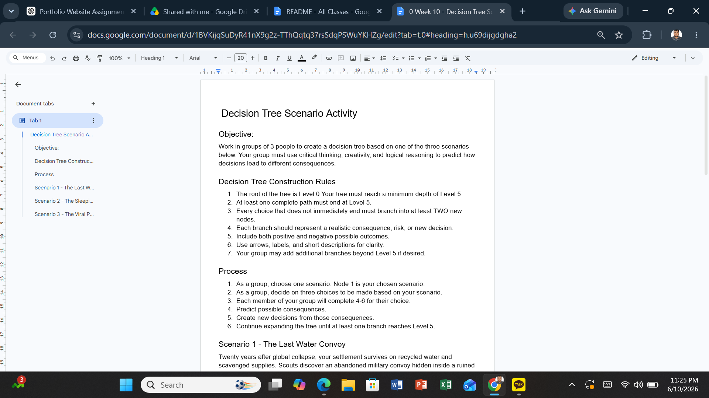

Project Overview
Decision Trees are visual tools used to evaluate different choices and their possible outcomes. In this activity I analyzed a business scenario involving a potential viral product launch and mapped possible outcomes using a decision tree structure. The activity demonstrated how managers can make better decisions by considering uncertainty and future outcomes.
- Decision Trees
- Risk Analysis
- Probability Thinking
- Strategic Planning
- Outcome Evaluation
Evidence


These screenshots show the business scenario and the decision tree used to analyze possible outcomes. The model visually demonstrates how different decisions can lead to different future results.
Decision-Making Process
The decision tree begins with a key decision and expands into multiple possible outcomes. Each branch represents a different path that could occur depending on external factors and management decisions.
- Identify the decision point
- Evaluate possible outcomes
- Estimate risks and rewards
- Compare alternatives
- Select the best option
What Did I Learn?
This activity showed me how managers can make more structured and informed decisions. Instead of relying solely on intuition, decision trees help visualize future possibilities and evaluate potential consequences before acting.
I learned that effective decision-making requires both analytical thinking and consideration of uncertainty.
Real-World Applications
- Business Strategy
- Investment Decisions
- Marketing Campaigns
- Risk Management
- Project Planning
- Product Launch Decisions
Organizations frequently use decision trees to evaluate complex choices and reduce uncertainty when making important business decisions.